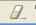

This view logs most of the SQL queries that are sent to the database, and also some action, like connection to a bookmark. To activate it you have to show it in the workspace. It's not enough that it's present, Eclipse only creates a view when really needed, so you need to display it. From that moment on, you have a log of the SQL queries you make, and also of most of the implicit queries that Quantum makes to extract data from the database.
There is an icon in the toolbar of the view, with an eraser, that clears the log.
You can set some preferences in the Quantum preferences window.